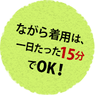
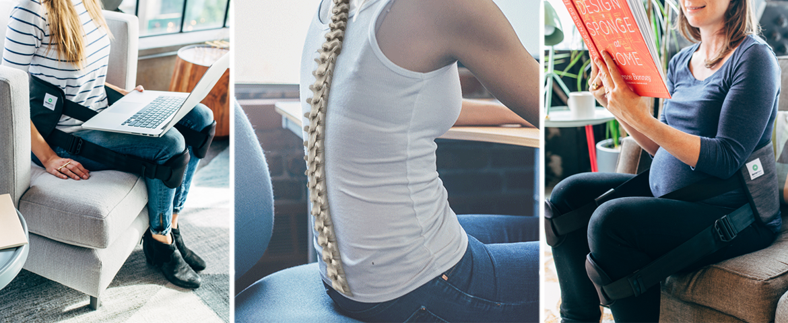
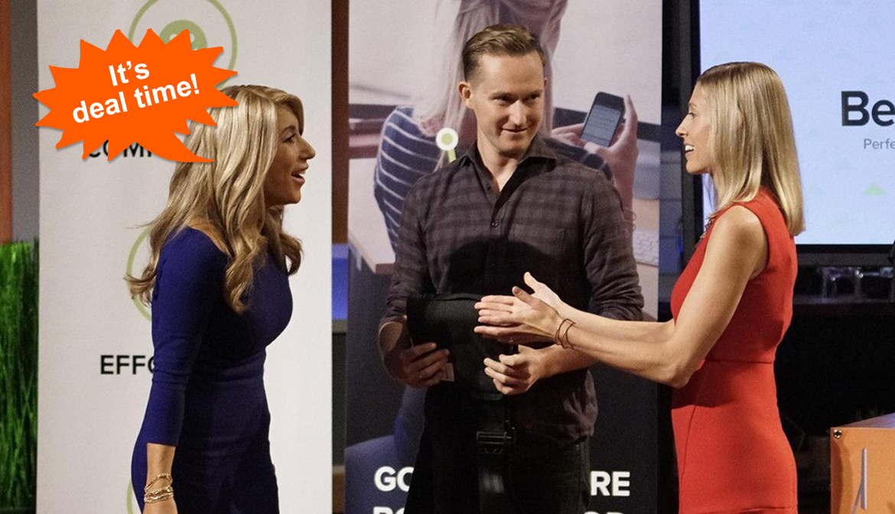
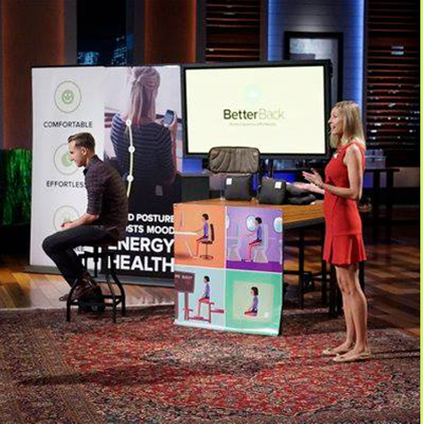
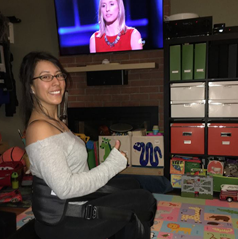

ベターバックは、
数々のメディアで取り上げられています。
数々のメディアで取り上げられています。
ポータブルだから、外出先でも大活躍！
正しい姿勢をカラダに覚えさせ、背骨の自然な曲線を取り戻すには、骨盤に対しての毎日のケアが重要となります。
ベターバックを使い、腰への負担が軽減された「座り」を行うことにより、骨盤が安定されていき、それにより、毎日の生活で酷使され続ける「腰」に対しての正しいケア・支えを、カラダ全体に無意識に覚えさせることができます。




